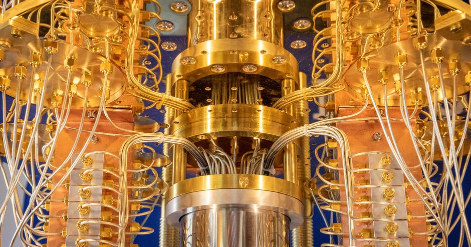

The Future of Computing: Quantum Computing

Quantum computing is an emerging field that has the potential to
revolutionize computing as we know it. Unlike classical computers,
which store and process information in binary digits (bits) that can
be either 0 or 1, quantum computers use quantum bits (qubits) that
can exist in a superposition of 0 and 1 states simultaneously. This
property of qubits enables quantum computers to perform certain
calculations much faster than classical computers. Quantum computing
is still in its early stages, and many of the practical applications
of this technology are still being developed. However, there are
already several potential areas where quantum computing could have a
significant impact. One of the most promising applications of
quantum computing is in the field of cryptography. Quantum computers
could be used to break many of the encryption algorithms that are
currently used to secure online transactions and communications.
However, quantum computers could also be used to develop new
encryption algorithms that are much more secure than those that are
currently available. Another potential application of quantum
computing is in the development of new materials and drugs. Quantum
computers could be used to simulate the behavior of molecules and
materials at the quantum level, which could lead to the development
of new materials with novel properties or the discovery of new drugs
for the treatment of diseases. Quantum computing could also have a
significant impact on machine learning and artificial intelligence.
Quantum computers could be used to train machine learning models
much faster than classical computers, which could lead to the
development of more powerful AI systems. However, there are also
significant challenges that need to be overcome before quantum
computing can become a reality. One of the biggest challenges is the
issue of quantum error correction, which is necessary to ensure that
the calculations performed by a quantum computer are accurate and
reliable. In conclusion, quantum computing has the potential to
transform computing in many ways, from cryptography to materials
science to artificial intelligence. While the technology is still in
its early stages, there is already significant interest and
investment in this field, and it is likely that quantum computing
will become a reality in the near future.
What is Quantum Computing?

Today's computers encode information in bits (0 and 1), whereas quantum computers are made up of quantum bits (qubits).
As such, quantum computers can exist as 1s and 0s simultaneously. This means that quantum computers can perform several
tasks at the same time, which allows for significantly faster results - especially in the areas of research and development.
These advancements will benefit many industries, including machine learning, artifical intelligence (AI), medicine,
and cybersecurity.
Quantum computers are about 158 million times faster than today's supercomputers.
This means a problem taking a supercomputer of today 10,000 years to solve is solved by the quantum computer of the future
in about four minutes. A system of this magnitude will change how many things are done and can revolutionise the future.
Quantum Computing & Its Industry Applications
Over the last decade, there have been significant enhancements in machine learning, a subset of AI. One example is the speed, accuracy and efficiency of Internet searches on search engines, such as Google. The concept of machine learning involves training computers to perform human tasks, allowing the machines to ask questions, gather data, and develop conclusions for algorithm formulation. Today, machine learning development is used in applications such as self-driving cars, web search results, and credit scoring, among many others.
Another industry that can benefit from quantum computing technology is the healthcare industry, especially the drug development sector. Drug testing is a long and drawn-out process, from research and development, to trials, testing, and approvals. However, this can change with quantum computing as the technology will allow the computer to look at all possible molecules and drug combinations and come up with the right solution.
One such example is an AI-driven pharmaceutical start-up, Auransa, that collaborated with Polaris Quantum Biotech, a company that deploys quantum computing for drug development. The two companies had embarked on a project to tackle triple-negative breast cancer, which is more aggresive and has fewer treatment options. With Polaris's quantum platform and Auransa's SMarTR Engine and human disease data, the two companies have generated promising leads for future drug development for cancer within months.
Other potential benefits of quantum computing in healthcare include early diagnosis of diseases or anomalies, as well as accuracy and efficiency in processing current and new patient data, especially in image-related data procedures, such as CT scans and X-rays. These possible applications will make for a more accurate diagnosis, reducing additional costs of diagnostic testing for patients and improving the effciency of doctors significantly.
Quantum computers are expected to be available in the market by 2030. However, more time will be required for hardware and software refinements before businesses can use them for their applications. Once quantum computers are in operation, the world is poised to witness a technological revolution transforming day-to-day applications.